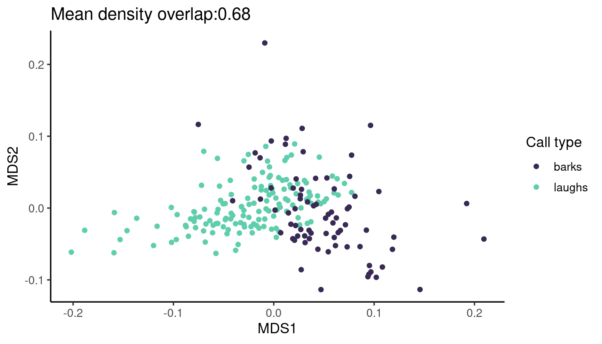
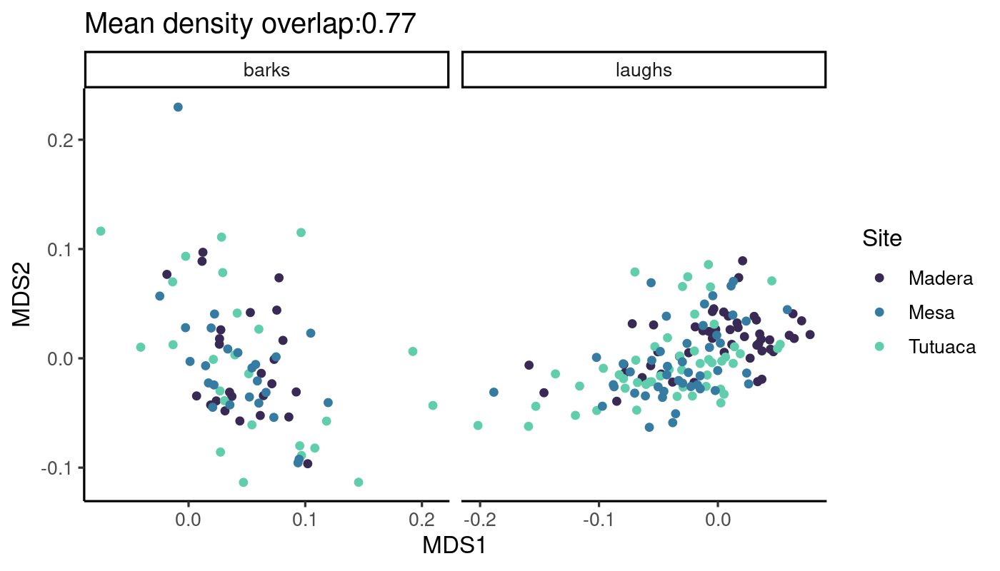
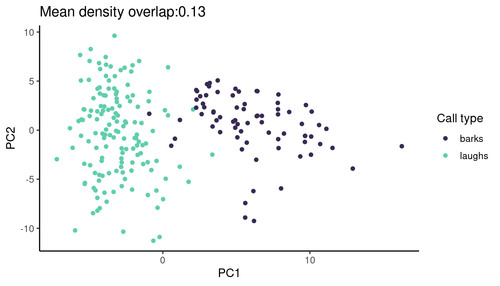
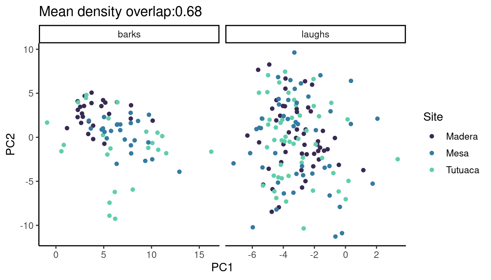
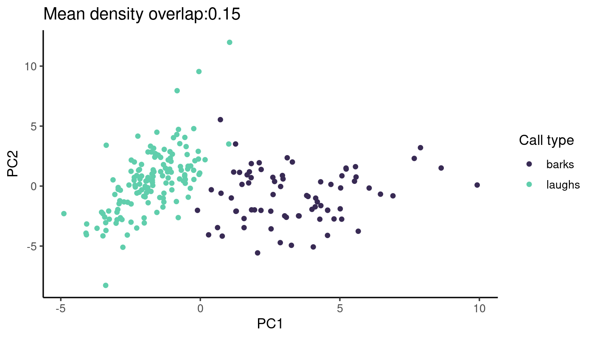
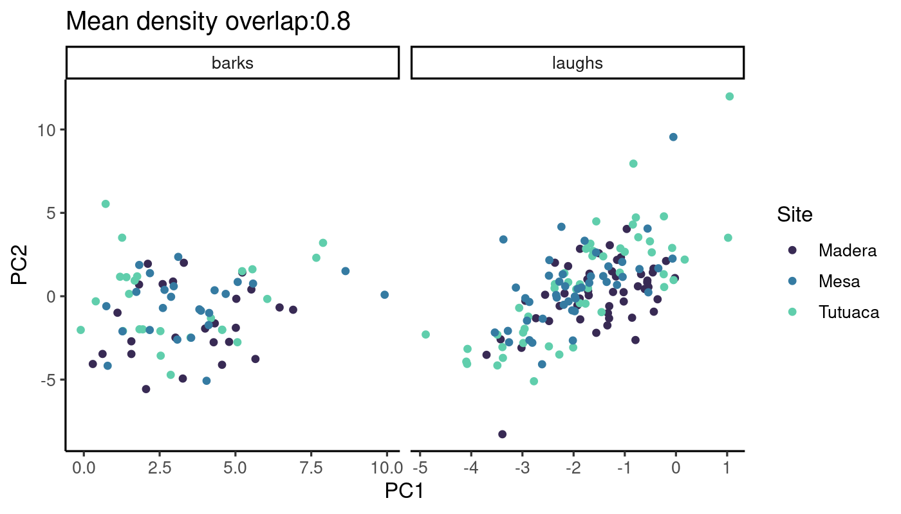
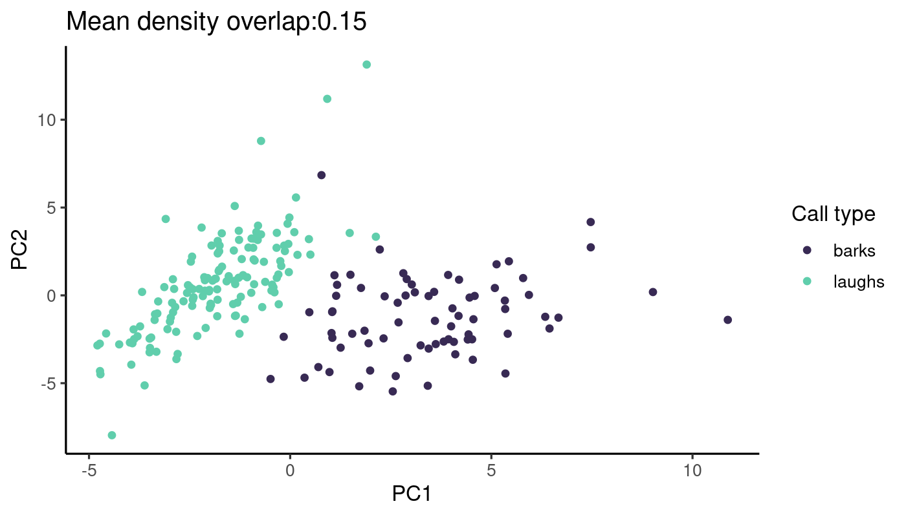
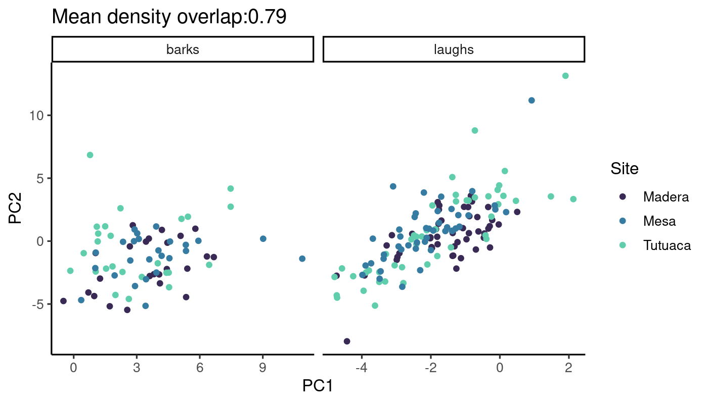
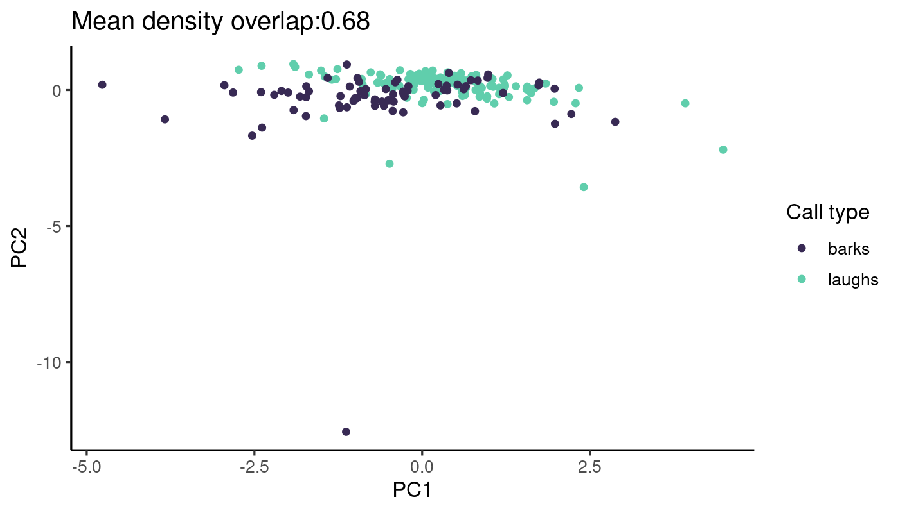
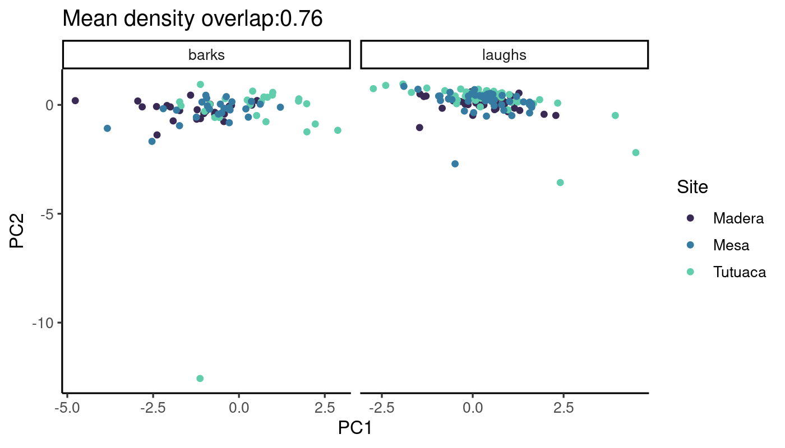

Code
# options to customize chunk outputs
knitr::opts_chunk$set(
tidy.opts = list(width.cutoff = 65),
tidy = TRUE,
message = FALSE
)
# ggplot font size
bs <- 12Acoustic analysis
# print link to github repo if any
if (file.exists("./.git/config")){
config <- readLines("./.git/config")
url <- grep("url", config, value = TRUE)
url <- gsub("\\turl = |.git$", "", url)
cat("\nSource code and data found at [", url, "](", url, ")", sep = "")
}Source code and data found at https://github.com/maRce10/thick_billed_parrots_vocal_variation
# options to customize chunk outputs
knitr::opts_chunk$set(
tidy.opts = list(width.cutoff = 65),
tidy = TRUE,
message = FALSE
)
# ggplot font size
bs <- 12
flowchart LR A(Read data) --> B(Create extended<br>selection tables) B --> C(Measure acoustic<br>features) C --> D(Explore acoustic spaces) style A fill:#44015466 style B fill:#3E4A894D style C fill:#26828E4D style D fill:#6DCD594D
# knitr is require for creating html/pdf/word reports formatR is
# used for soft-wrapping code
# install/ load packages
sketchy::load_packages(packages = c("knitr", "formatR", "warbleR",
"ggplot2", "maRce10/PhenotypeSpace", "lme4"))# read laughs
est_laughs <- warbleR::selection_table(path = "./data/raw/audio_files/thick_billed_parrots/laughs/",
whole.recs = TRUE, extended = TRUE)
est_laughs <- resample_est(est_laughs, samp.rate = 22.05)
dat_laughs <- read.csv("./data/raw/audio_files/thick_billed_parrots/laughs/TBP_Laugh1stNote-CallList_20Jul25.csv")
dat_laughs$CallFile <- paste0(gsub("\\.aif", "", dat_laughs$CallFile),
"_1")
merged_laughs <- merge(est_laughs, dat_laughs, by.x = "sound.files",
by.y = "CallFile", all.x = TRUE)
merged_laughs <- fix_extended_selection_table(merged_laughs, est_laughs)
merged_laughs$type <- "laughs"
# read barks
est_barks <- warbleR::selection_table(path = "./data/raw/audio_files/thick_billed_parrots/barks",
whole.recs = TRUE, extended = TRUE)
est_barks <- resample_est(est_barks, samp.rate = 22.05)
dat_barks <- read.csv("./data/raw/audio_files/thick_billed_parrots/barks/TBP_Bark-CallList_20Jul25.csv")
dat_barks <- dat_barks[(dat_barks$Call.File) != "", ]
names(dat_barks) <- names(dat_laughs)
dat_barks$CallFile <- paste0(gsub("\\.aif", ".wav", dat_barks$CallFile),
"_1")
merged_barks <- merge(est_barks, dat_barks, by.x = "sound.files",
by.y = "CallFile", all.x = TRUE)
merged_barks <- fix_extended_selection_table(merged_barks, est_barks)
merged_barks$type <- "barks"
tbp_calls <- rbind(merged_laughs, merged_barks)
saveRDS(tbp_calls, file = "./data/processed/extended_selection_table_tpb_calls.rds")Five sets of acoustic features are measured: - Cross-correlation - MFCCs - Spectral features - Spectral + harmonic features - Wavelet features
tbp_calls <- readRDS("./data/processed/extended_selection_table_tpb_calls.rds")
# cross correlation
tbp_xc <- warbleR::cross_correlation(X = tbp_calls, ovlp = 70, bp = c(0.1,
8), parallel = 20)
# save results
saveRDS(tbp_xc, file = "./data/processed/cross_correlation_tpb_calls.rds")
# mfccs
tbp_mfcc <- warbleR::mfcc_stats(X = tbp_calls, ovlp = 70, bp = c(0.1,
8), parallel = 20)
# save results
saveRDS(tbp_mfcc, file = "./data/processed/mfcc_tpb_calls.rds")
# spectral feautures
tbp_spft <- warbleR::spectro_analysis(X = tbp_calls, ovlp = 70, bp = c(0.1,
8), parallel = 20)
# save results
saveRDS(tbp_spft, file = "./data/processed/spectral_features_tpb_calls.rds")
# spectral + harmonic features
tbp_spft_harm <- warbleR::spectro_analysis(X = tbp_calls, ovlp = 70,
bp = c(0.1, 8), parallel = 20, harmonicity = TRUE)
# save results
saveRDS(tbp_spft_harm, file = "./data/processed/spectral_features_harmonics_tpb_calls.rds")
tbp_wpd <- warbleR::wpd_features(X = tbp_calls, parallel = 20)
# save results
saveRDS(tbp_wpd, file = "./data/processed/wavelets_tpb_calls.rds")tbp_xc <- readRDS("./data/processed/cross_correlation_tpb_calls.rds")
tbp_calls <- readRDS("./data/processed/extended_selection_table_tpb_calls.rds")
tbp_mds <- cmdscale(tbp_xc, k = 2)
tbp_calls$MDS1 <- tbp_mds[, 1]
tbp_calls$MDS2 <- tbp_mds[, 2]
ss_type <- space_similarity(type ~ MDS1 + MDS2, data = as.data.frame(tbp_calls),
method = "density.overlap")
# graph bidimensional space with gpplot coloring by type
ggplot(tbp_calls, aes(x = MDS1, y = MDS2, color = type)) + geom_point() +
scale_colour_viridis_d(option = "G", begin = 0.2, end = 0.8, name = "Call type") +
theme_classic(base_size = bs) + labs(title = paste0("Mean density overlap:",
round(ss_type$mean.overlap, 2)), x = "MDS1", y = "MDS2")
ss_type_barks <- space_similarity(Site ~ MDS1 + MDS2, data = as.data.frame(tbp_calls[tbp_calls$type ==
"barks", ]), method = "density.overlap")
ss_type_laughs <- space_similarity(Site ~ MDS1 + MDS2, data = as.data.frame(tbp_calls[tbp_calls$type ==
"laughs", ]), method = "density.overlap")
mean_ovlp <- mean(c(ss_type_barks$mean.overlap, ss_type_laughs$mean.overlap))
ggplot(tbp_calls, aes(x = MDS1, y = MDS2, color = Site)) + geom_point() +
scale_colour_viridis_d(option = "G", begin = 0.2, end = 0.8, name = "Site") +
theme_classic(base_size = bs) + facet_grid(~type, scales = "free") +
labs(title = paste0("Mean density overlap:", round(mean_ovlp,
2)), x = "MDS1", y = "MDS2")
tbp_mfcc <- readRDS("./data/processed/mfcc_tpb_calls.rds")
# pca
pca <- prcomp(tbp_mfcc[, -c(1:2)], center = TRUE, scale. = TRUE)
tbp_calls$PC1.mfcc <- pca$x[, 1]
tbp_calls$PC2.mfcc <- pca$x[, 2]
ss_type <- space_similarity(type ~ PC1.mfcc + PC2.mfcc, data = as.data.frame(tbp_calls),
method = "density.overlap")
# graph bidimensional space with gpplot coloring by type
ggplot(tbp_calls, aes(x = PC1.mfcc, y = PC2.mfcc, color = type)) +
geom_point() + scale_colour_viridis_d(option = "G", begin = 0.2,
end = 0.8, name = "Call type") + theme_classic(base_size = bs) +
labs(title = paste0("Mean density overlap:", round(ss_type$mean.overlap,
2)), x = "PC1", y = "PC2")
ss_type_barks <- space_similarity(Site ~ PC1.mfcc + PC2.mfcc, data = as.data.frame(tbp_calls[tbp_calls$type ==
"barks", ]), method = "density.overlap")
ss_type_laughs <- space_similarity(Site ~ PC1.mfcc + PC2.mfcc, data = as.data.frame(tbp_calls[tbp_calls$type ==
"laughs", ]), method = "density.overlap")
mean_ovlp <- mean(c(ss_type_barks$mean.overlap, ss_type_laughs$mean.overlap))
ggplot(tbp_calls, aes(x = PC1.mfcc, y = PC2.mfcc, color = Site)) +
geom_point() + scale_colour_viridis_d(option = "G", begin = 0.2,
end = 0.8, name = "Site") + theme_classic(base_size = bs) + facet_grid(~type,
scales = "free") + labs(title = paste0("Mean density overlap:",
round(mean_ovlp, 2)), x = "PC1", y = "PC2")
tbp_spft <- readRDS("./data/processed/spectral_features_tpb_calls.rds")
# pca
pca <- prcomp(tbp_spft[, -c(1:2)], center = TRUE, scale. = TRUE)
tbp_calls$PC1.spft <- pca$x[, 1]
tbp_calls$PC2.spft <- pca$x[, 2]
ss_type <- space_similarity(type ~ PC1.spft + PC2.spft, data = as.data.frame(tbp_calls),
method = "density.overlap")
# graph bidimensional space with gpplot coloring by type
ggplot(tbp_calls, aes(x = PC1.spft, y = PC2.spft, color = type)) +
geom_point() + scale_colour_viridis_d(option = "G", begin = 0.2,
end = 0.8, name = "Call type") + theme_classic(base_size = bs) +
labs(title = paste0("Mean density overlap:", round(ss_type$mean.overlap,
2)), x = "PC1", y = "PC2")
ss_type_barks <- space_similarity(Site ~ PC1.spft + PC2.spft, data = as.data.frame(tbp_calls[tbp_calls$type ==
"barks", ]), method = "density.overlap")
ss_type_laughs <- space_similarity(Site ~ PC1.spft + PC2.spft, data = as.data.frame(tbp_calls[tbp_calls$type ==
"laughs", ]), method = "density.overlap")
mean_ovlp <- mean(c(ss_type_barks$mean.overlap, ss_type_laughs$mean.overlap))
ggplot(tbp_calls, aes(x = PC1.spft, y = PC2.spft, color = Site)) +
geom_point() + scale_colour_viridis_d(option = "G", begin = 0.2,
end = 0.8, name = "Site") + theme_classic(base_size = bs) + facet_grid(~type,
scales = "free") + labs(title = paste0("Mean density overlap:",
round(mean_ovlp, 2)), x = "PC1", y = "PC2")
tbp_spft_harm <- readRDS("./data/processed/spectral_features_harmonics_tpb_calls.rds")
sub_tbp_calls <- tbp_calls[complete.cases(tbp_spft_harm), ]
# remove NAs
tbp_spft_harm <- tbp_spft_harm[complete.cases(tbp_spft_harm), ]
# pca
pca <- prcomp(tbp_spft_harm[, -c(1:2)], center = TRUE, scale. = TRUE)
sub_tbp_calls$PC1.spftharmft <- pca$x[, 1]
sub_tbp_calls$PC2.spftharmft <- pca$x[, 2]
ss_type <- space_similarity(type ~ PC1.spftharmft + PC2.spftharmft,
data = as.data.frame(sub_tbp_calls), method = "density.overlap")
# graph bidimensional space with gpplot coloring by type
ggplot(sub_tbp_calls, aes(x = PC1.spftharmft, y = PC2.spftharmft,
color = type)) + geom_point() + scale_colour_viridis_d(option = "G",
begin = 0.2, end = 0.8, name = "Call type") + theme_classic(base_size = bs) +
labs(title = paste0("Mean density overlap:", round(ss_type$mean.overlap,
2)), x = "PC1", y = "PC2")
ss_type_barks <- space_similarity(Site ~ PC1.spftharmft + PC2.spftharmft,
data = as.data.frame(sub_tbp_calls[sub_tbp_calls$type == "barks",
]), method = "density.overlap")
ss_type_laughs <- space_similarity(Site ~ PC1.spftharmft + PC2.spftharmft,
data = as.data.frame(sub_tbp_calls[sub_tbp_calls$type == "laughs",
]), method = "density.overlap")
mean_ovlp <- mean(c(ss_type_barks$mean.overlap, ss_type_laughs$mean.overlap))
ggplot(sub_tbp_calls, aes(x = PC1.spftharmft, y = PC2.spftharmft,
color = Site)) + geom_point() + scale_colour_viridis_d(option = "G",
begin = 0.2, end = 0.8, name = "Site") + theme_classic(base_size = bs) +
facet_grid(~type, scales = "free") + labs(title = paste0("Mean density overlap:",
round(mean_ovlp, 2)), x = "PC1", y = "PC2")
tbp_wavelet <- readRDS("./data/processed/wavelets_tpb_calls.rds")
# pca
pca <- prcomp(tbp_wavelet[, -c(1:2)], center = TRUE, scale. = TRUE)
tbp_calls$PC1.wpd <- pca$x[, 1]
tbp_calls$PC2.wpd <- pca$x[, 2]
ss_type <- space_similarity(type ~ PC1.wpd + PC2.wpd, data = as.data.frame(tbp_calls),
method = "density.overlap")
# graph bidimensional space with gpplot coloring by type
ggplot(tbp_calls, aes(x = PC1.wpd, y = PC2.wpd, color = type)) + geom_point() +
scale_colour_viridis_d(option = "G", begin = 0.2, end = 0.8, name = "Call type") +
theme_classic(base_size = bs) + labs(title = paste0("Mean density overlap:",
round(ss_type$mean.overlap, 2)), x = "PC1", y = "PC2")
ss_type_barks <- space_similarity(Site ~ PC1.wpd + PC2.wpd, data = as.data.frame(tbp_calls[tbp_calls$type ==
"barks", ]), method = "density.overlap")
ss_type_laughs <- space_similarity(Site ~ PC1.wpd + PC2.wpd, data = as.data.frame(tbp_calls[tbp_calls$type ==
"laughs", ]), method = "density.overlap")
mean_ovlp <- mean(c(ss_type_barks$mean.overlap, ss_type_laughs$mean.overlap))
ggplot(tbp_calls, aes(x = PC1.wpd, y = PC2.wpd, color = Site)) + geom_point() +
scale_colour_viridis_d(option = "G", begin = 0.2, end = 0.8, name = "Site") +
theme_classic(base_size = bs) + facet_grid(~type, scales = "free") +
labs(title = paste0("Mean density overlap:", round(mean_ovlp,
2)), x = "PC1", y = "PC2")
─ Session info ───────────────────────────────────────────────────────────────
setting value
version R version 4.5.0 (2025-04-11)
os Ubuntu 22.04.5 LTS
system x86_64, linux-gnu
ui X11
language (EN)
collate en_US.UTF-8
ctype en_US.UTF-8
tz America/Costa_Rica
date 2025-07-28
pandoc 3.2 @ /usr/lib/rstudio/resources/app/bin/quarto/bin/tools/x86_64/ (via rmarkdown)
quarto 1.7.31 @ /usr/local/bin/quarto
─ Packages ───────────────────────────────────────────────────────────────────
package * version date (UTC) lib source
abind 1.4-8 2024-09-12 [1] CRAN (R 4.5.0)
bitops 1.0-9 2024-10-03 [3] CRAN (R 4.5.0)
boot 1.3-31 2024-08-28 [4] CRAN (R 4.4.2)
brio 1.1.5 2024-04-24 [3] CRAN (R 4.5.0)
cachem 1.1.0 2024-05-16 [1] CRAN (R 4.5.0)
class 7.3-23 2025-01-01 [4] CRAN (R 4.4.2)
classInt 0.4-11 2025-01-08 [1] CRAN (R 4.5.0)
cli 3.6.5 2025-04-23 [1] CRAN (R 4.5.0)
cluster 2.1.8.1 2025-03-12 [4] CRAN (R 4.4.3)
codetools 0.2-20 2024-03-31 [4] CRAN (R 4.5.0)
crayon 1.5.3 2024-06-20 [1] CRAN (R 4.5.0)
curl 6.4.0 2025-06-22 [1] CRAN (R 4.5.0)
DBI 1.2.3 2024-06-02 [1] CRAN (R 4.5.0)
deldir 2.0-4 2024-02-28 [1] CRAN (R 4.5.0)
devtools 2.4.5 2022-10-11 [1] CRAN (R 4.5.0)
digest 0.6.37 2024-08-19 [1] CRAN (R 4.5.0)
dplyr 1.1.4 2023-11-17 [1] CRAN (R 4.5.0)
dtw 1.23-1 2022-09-19 [1] CRAN (R 4.5.0)
e1071 1.7-16 2024-09-16 [1] CRAN (R 4.5.0)
ellipsis 0.3.2 2021-04-29 [3] CRAN (R 4.1.1)
evaluate 1.0.3 2025-01-10 [1] CRAN (R 4.5.0)
farver 2.1.2 2024-05-13 [1] CRAN (R 4.5.0)
fastmap 1.2.0 2024-05-15 [1] CRAN (R 4.5.0)
fftw 1.0-9 2024-09-20 [3] CRAN (R 4.5.0)
formatR * 1.14 2023-01-17 [1] CRAN (R 4.5.0)
fs 1.6.6 2025-04-12 [1] CRAN (R 4.5.0)
generics 0.1.4 2025-05-09 [1] CRAN (R 4.5.0)
ggplot2 * 3.5.2 2025-04-09 [1] CRAN (R 4.5.0)
glue 1.8.0 2024-09-30 [1] CRAN (R 4.5.0)
goftest 1.2-3 2021-10-07 [3] CRAN (R 4.1.1)
gridExtra 2.3 2017-09-09 [1] CRAN (R 4.5.0)
gtable 0.3.6 2024-10-25 [1] CRAN (R 4.5.0)
htmltools 0.5.8.1 2024-04-04 [1] CRAN (R 4.5.0)
htmlwidgets 1.6.4 2023-12-06 [1] RSPM (R 4.5.0)
httpuv 1.6.16 2025-04-16 [1] RSPM (R 4.5.0)
httr 1.4.7 2023-08-15 [3] CRAN (R 4.5.0)
jsonlite 2.0.0 2025-03-27 [1] CRAN (R 4.5.0)
KernSmooth 2.23-26 2025-01-01 [4] CRAN (R 4.4.2)
knitr * 1.50 2025-03-16 [1] CRAN (R 4.5.0)
labeling 0.4.3 2023-08-29 [1] CRAN (R 4.5.0)
later 1.4.2 2025-04-08 [1] RSPM (R 4.5.0)
lattice 0.22-7 2025-04-02 [4] CRAN (R 4.5.0)
lifecycle 1.0.4 2023-11-07 [1] CRAN (R 4.5.0)
lme4 * 1.1-37 2025-03-26 [1] CRAN (R 4.5.0)
magrittr 2.0.3 2022-03-30 [1] CRAN (R 4.5.0)
MASS 7.3-65 2025-02-28 [4] CRAN (R 4.4.3)
Matrix * 1.7-3 2025-03-11 [4] CRAN (R 4.4.3)
memoise 2.0.1 2021-11-26 [3] CRAN (R 4.1.2)
mgcv 1.9-3 2025-04-04 [4] CRAN (R 4.5.0)
mime 0.13 2025-03-17 [1] CRAN (R 4.5.0)
miniUI 0.1.2 2025-04-17 [3] CRAN (R 4.5.0)
minqa 1.2.4 2014-10-09 [3] CRAN (R 4.0.1)
NatureSounds * 1.0.5 2025-01-17 [1] CRAN (R 4.5.0)
nicheROVER 1.1.2 2023-10-13 [1] CRAN (R 4.5.0)
nlme 3.1-168 2025-03-31 [4] CRAN (R 4.4.3)
nloptr 2.2.1 2025-03-17 [3] CRAN (R 4.5.0)
packrat 0.9.2 2023-09-05 [1] CRAN (R 4.5.0)
pbapply 1.7-4 2025-07-20 [1] CRAN (R 4.5.0)
permute 0.9-8 2025-06-25 [1] CRAN (R 4.5.0)
PhenotypeSpace * 0.1.1 2025-07-21 [1] Github (maRce10/PhenotypeSpace@1ee576c)
pillar 1.11.0 2025-07-04 [1] CRAN (R 4.5.0)
pkgbuild 1.4.8 2025-05-26 [1] CRAN (R 4.5.0)
pkgconfig 2.0.3 2019-09-22 [1] CRAN (R 4.5.0)
pkgload 1.4.0 2024-06-28 [1] CRAN (R 4.5.0)
polyclip 1.10-7 2024-07-23 [1] CRAN (R 4.5.0)
profvis 0.4.0 2024-09-20 [1] CRAN (R 4.5.0)
promises 1.3.3 2025-05-29 [1] RSPM (R 4.5.0)
proxy 0.4-27 2022-06-09 [1] CRAN (R 4.5.0)
purrr 1.0.4 2025-02-05 [1] CRAN (R 4.5.0)
R6 2.6.1 2025-02-15 [1] CRAN (R 4.5.0)
raster 3.6-32 2025-03-28 [1] CRAN (R 4.5.0)
rbibutils 2.3 2024-10-04 [1] CRAN (R 4.5.0)
RColorBrewer 1.1-3 2022-04-03 [1] CRAN (R 4.5.0)
Rcpp 1.1.0 2025-07-02 [1] CRAN (R 4.5.0)
RCurl 1.98-1.17 2025-03-22 [1] CRAN (R 4.5.0)
Rdpack 2.6.4 2025-04-09 [1] CRAN (R 4.5.0)
reformulas 0.4.1 2025-04-30 [1] CRAN (R 4.5.0)
remotes 2.5.0 2024-03-17 [1] CRAN (R 4.5.0)
rjson 0.2.23 2024-09-16 [1] CRAN (R 4.5.0)
rlang 1.1.6 2025-04-11 [1] CRAN (R 4.5.0)
rmarkdown 2.29 2024-11-04 [1] CRAN (R 4.5.0)
rstudioapi 0.17.1 2024-10-22 [1] CRAN (R 4.5.0)
scales 1.4.0 2025-04-24 [1] CRAN (R 4.5.0)
seewave * 2.2.3 2023-10-19 [1] CRAN (R 4.5.0)
sessioninfo 1.2.3 2025-02-05 [3] CRAN (R 4.5.0)
sf 1.0-21 2025-05-15 [1] CRAN (R 4.5.0)
shiny 1.10.0 2024-12-14 [1] CRAN (R 4.5.0)
signal 1.8-1 2024-06-26 [1] CRAN (R 4.5.0)
sketchy 1.0.5 2025-04-22 [1] CRANs (R 4.5.0)
sp 2.2-0 2025-02-01 [1] CRAN (R 4.5.0)
spatstat.data 3.1-6 2025-03-17 [1] CRAN (R 4.5.0)
spatstat.explore 3.4-3 2025-05-21 [1] CRAN (R 4.5.0)
spatstat.geom 3.5-0 2025-07-20 [1] CRAN (R 4.5.0)
spatstat.random 3.4-1 2025-05-20 [1] CRAN (R 4.5.0)
spatstat.sparse 3.1-0 2024-06-21 [1] CRAN (R 4.5.0)
spatstat.univar 3.1-4 2025-07-13 [1] CRAN (R 4.5.0)
spatstat.utils 3.1-5 2025-07-17 [1] CRAN (R 4.5.0)
stringi 1.8.7 2025-03-27 [1] CRAN (R 4.5.0)
stringr 1.5.1 2023-11-14 [1] CRAN (R 4.5.0)
tensor 1.5.1 2025-06-17 [1] CRAN (R 4.5.0)
terra 1.8-60 2025-07-21 [1] CRAN (R 4.5.0)
testthat 3.2.3 2025-01-13 [1] CRAN (R 4.5.0)
tibble 3.3.0 2025-06-08 [1] RSPM (R 4.5.0)
tidyselect 1.2.1 2024-03-11 [1] CRAN (R 4.5.0)
tuneR * 1.4.7 2024-04-17 [1] CRAN (R 4.5.0)
units 0.8-7 2025-03-11 [1] CRAN (R 4.5.0)
urlchecker 1.0.1 2021-11-30 [1] CRAN (R 4.5.0)
usethis 3.1.0 2024-11-26 [3] CRAN (R 4.5.0)
vctrs 0.6.5 2023-12-01 [1] CRAN (R 4.5.0)
vegan 2.7-1 2025-06-05 [1] CRAN (R 4.5.0)
viridis 0.6.5 2024-01-29 [1] CRAN (R 4.5.0)
viridisLite 0.4.2 2023-05-02 [1] CRAN (R 4.5.0)
warbleR * 1.1.35 2016-04-19 [1] CRAN (R 4.5.0)
withr 3.0.2 2024-10-28 [1] CRAN (R 4.5.0)
xaringanExtra 0.8.0 2024-05-19 [1] CRAN (R 4.5.0)
xfun 0.52 2025-04-02 [1] CRAN (R 4.5.0)
xtable 1.8-4 2019-04-21 [3] CRAN (R 4.0.1)
yaml 2.3.10 2024-07-26 [1] CRAN (R 4.5.0)
[1] /home/m/R/x86_64-pc-linux-gnu-library/4.5
[2] /usr/local/lib/R/site-library
[3] /usr/lib/R/site-library
[4] /usr/lib/R/library
* ── Packages attached to the search path.
──────────────────────────────────────────────────────────────────────────────